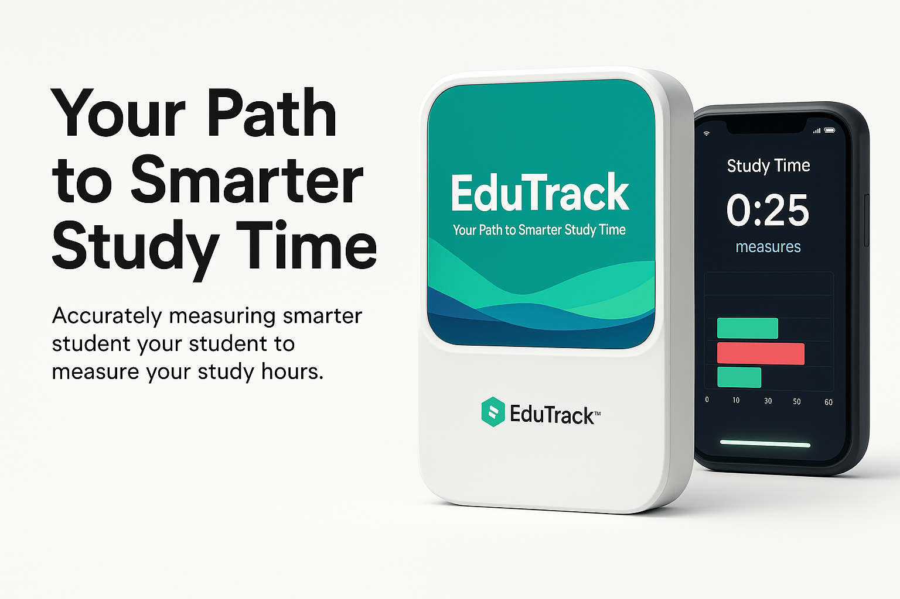
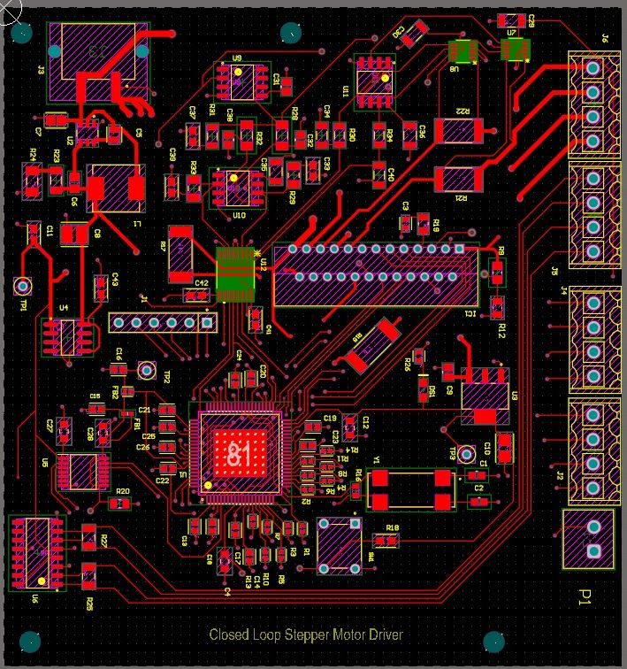
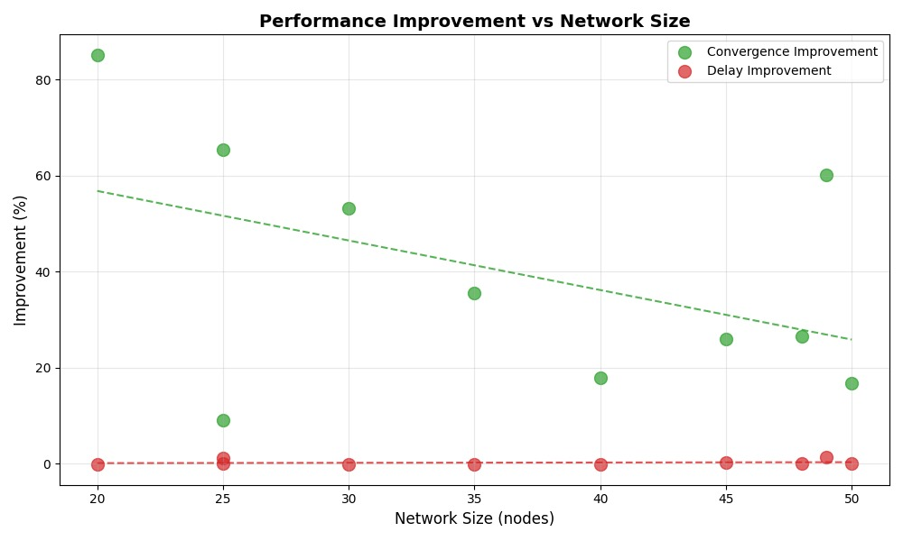
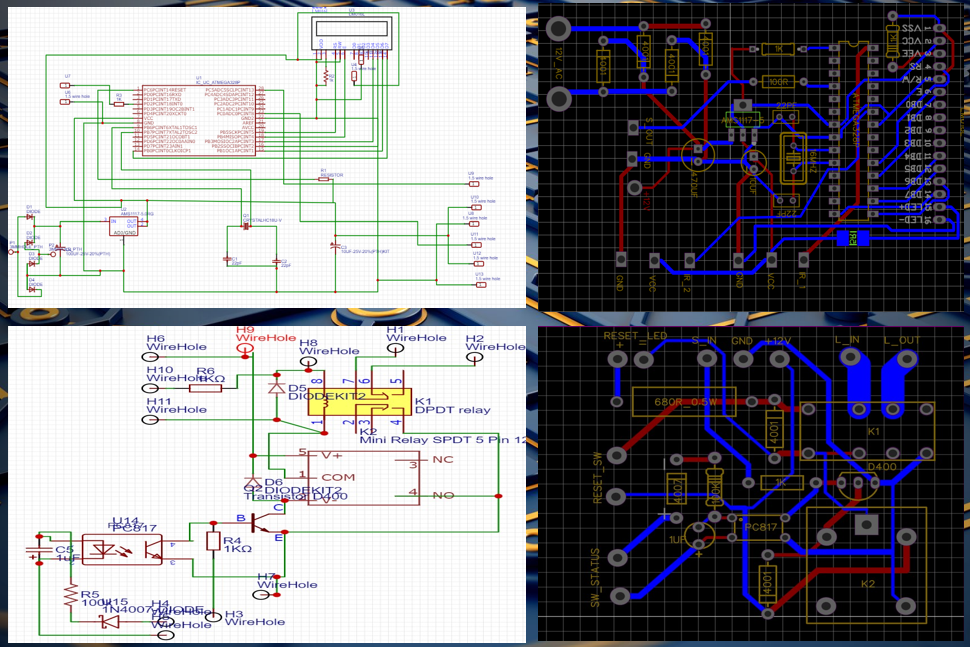

Projects

StopMate SL- Sri Lanka Bus Stop Notifier (Ongoing)
Developing a mobile app that alerts passengers before their bus stop, integrating Gemini API for Sri Lanka location search, and planning vector database integration to improve accuracy and search performance.

Closed Loop Stepper Motor Driver
Designed mixed-signal PCB and architecture for closed-loop 2-phase stepper motor control, integrated reliable components, collaborated on FOC and SVM requirements, and produced comprehensive user manuals and technical documentation.

Extended OSPF Protocol
Analyzed OSPF limitations and designed an enhanced routing protocol with critical node optimization, implemented priority-based algorithms and caching in Python, and built a simulation framework demonstrating improved convergence across network topologies.

BladeRF Tranceiver
Developed SDR-based point-to-point file communication system using GNU Radio and BladeRF, enabling reliable 2.4 GHz transmission up to 20 m with Python GUI, QPSK/FM modulation, and convolutional coding for error resilience.

Automated Power Saving Unit
Designed PCB-based smart energy system using ATmega32, implemented IR sensor-based person counting for entry/exit tracking, and integrated relay locking for user control, optimizing device usage and reducing unnecessary power consumption.